neler yapıyorum?
hizmetler
Küçük işletmeler için web sitesi, uygulama ve kurumsal kimlik tasarımı.
01
web sitesi tasarımı
Kurumsal site, tanıtım sayfası ve kişisel portfolyo; her ekranda düzgün görünen tasarımlar.
02
mobil uygulama tasarımı
Kullanımı kolay, sade ve modern uygulama ekranları.
03
logo ve kurumsal kimlik
İşletmenizi yansıtan logo, renk ve yazı tipi seçimi.
04
menü tasarımı
Kafe ve restoranlar için basılı ve dijital (QR) menüler.
Yapay zekâ araçlarıyla çalıştığım için tasarımları hızlı üretiyor, size daha çok revizyon fırsatı sunuyorum.
can web sitesi
öne çıkan proje
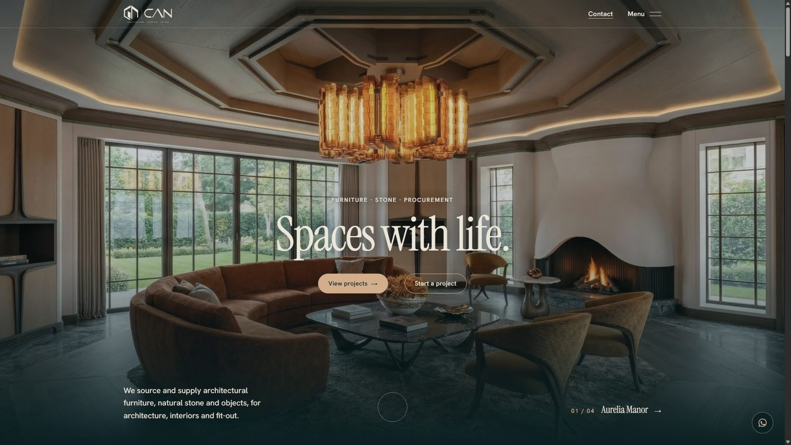
İzmir’deki CAN için tasarlayıp geliştirdiğim site. CAN, iç mekân projelerine mobilya, doğal taş ve obje tedarik ediyor.
- kaydırmayla açılan sinematik giriş
- kategorili ürün kataloğu
- 26 taşlık 3D doğal taş koleksiyonu
- proje galerileri ve teklif formu
teknoloji:Next.js · GSAP animasyon · 3D · mobil uyumlu
sahne sahne ana sayfa
can · giriş deneyimi
Kaydırdıkça fotoğraf dev CAN harflerinin içinden görünür, sonra kapılar açılıp “means life” sahnesi gelir. Menüde her başlığın görseli değişir.
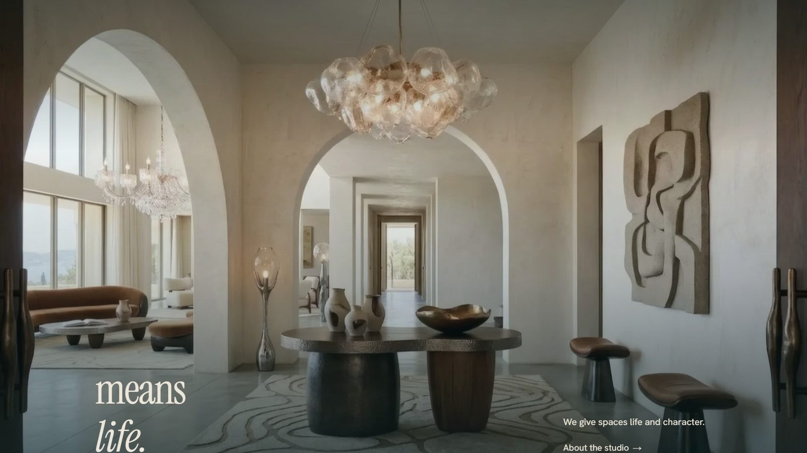
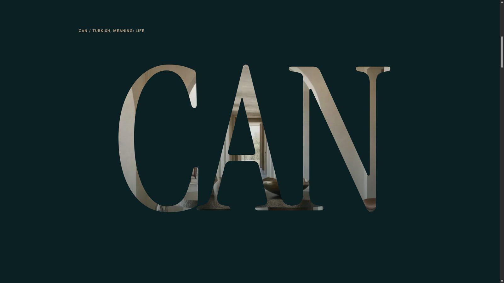
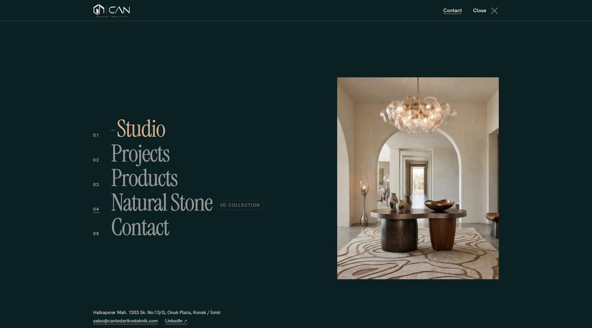
katalog ve süreç
can · ürünler ve tedarik
Ürünler kategoriye göre filtrelenir, her parçanın kodu ve teklif butonu var. Tedarik süreci, kaydırdıkça çizilen bir çizgiyle beş adımda anlatılır.
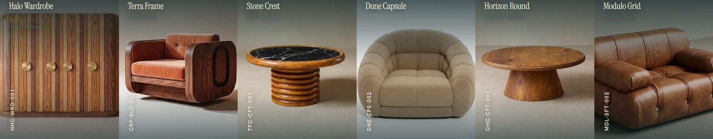
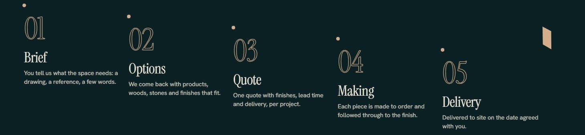
galeri ve teklif
can · projeler ve iletişim
Projeler büyük fotoğraf ve küçük önizlemelerle gezilir. İletişim sayfası ziyaretçiyi tek bir formla doğrudan teklif istemeye yönlendirir.
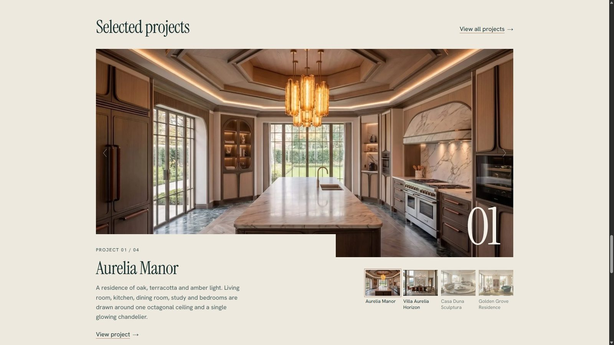
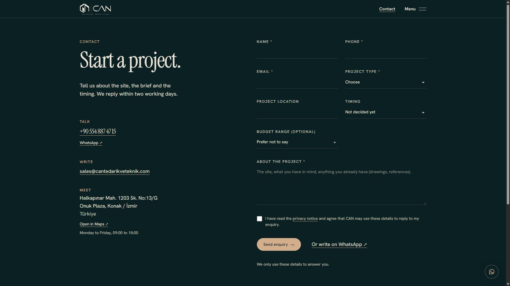
teklif formu
Proje tipi, konum, zamanlama ve bütçe tek formda. Yanında WhatsApp ve harita bağlantısı.
3D taş koleksiyonu
can · doğal taş
18 mermer ve 8 traverten. Her taş tarayıcıda 3D olarak çevrilip ışıkta incelenir, renge göre filtrelenir ve tek tıkla teklif istenir.
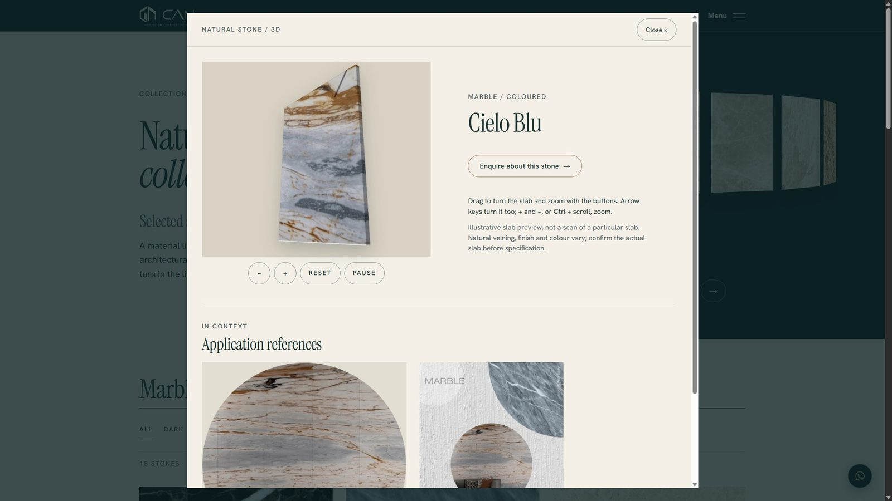
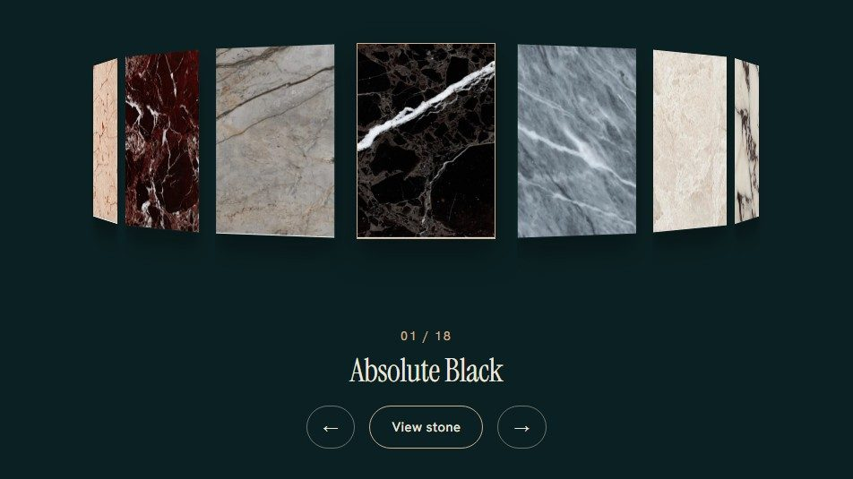
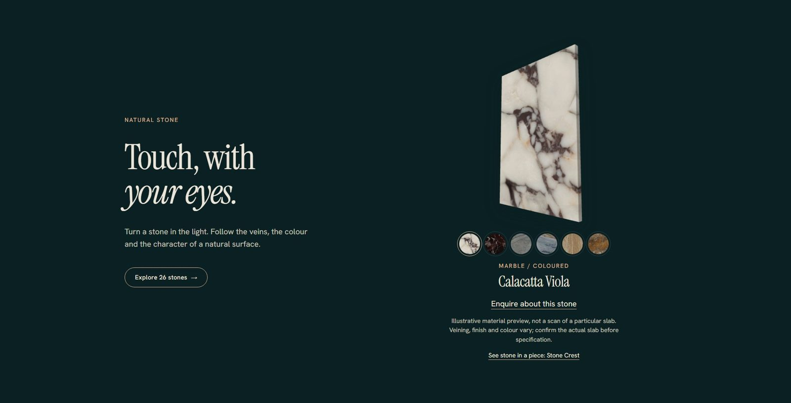
nasıl çalışıyoruz?
çalışma süreci
Fikirden yayına dört adım. Her adımda sizi bilgilendiriyor, kararları birlikte veriyoruz.
01
görüşme
İhtiyaçlarınızı ve hedeflerinizi dinliyorum.
02
tasarım
İlk taslağı kısa sürede hazırlıyorum.
03
revizyon
Geri bildirimlerinize göre düzenliyorum.
04
yayına alma
Siteniz yayında; sonrasında da destek veriyorum.